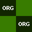
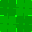
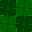
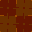
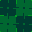

Texture Atlas¶
This is the full atlas (completed + pending) for the current texture scope. Use Texture Production Checklist for only textures still to be made.
Special Textures¶
| Texture | Preview | Status |
|---|---|---|
special/clip |
Completed | |
special/glass |
Completed | |
special/mirror |
Completed | |
special/origin |
 |
Pending |
special/portal |
Completed | |
special/skip |
Completed | |
special/trigger |
Completed | |
special/water |
Completed |
Color Textures¶
Naming rule: base = full saturation, trailing t = tint, trailing s = shade.
Full Saturation¶
| Texture | Preview |
|---|---|
color/bgray |
|
color/black |
|
color/blue |
|
color/cblue |
|
color/cyan |
|
color/green |
 |
color/grey |
|
color/magenta |
|
color/orange |
|
color/pink |
|
color/purple |
|
color/red |
|
color/wgray |
|
color/white |
|
color/yellow |
|
color/ygreen |
Tints¶
| Texture | Preview |
|---|---|
color/bluet |
|
color/cbluet |
|
color/cyant |
|
color/greent |
|
color/magentat |
|
color/oranget |
|
color/pinkt |
|
color/purplet |
|
color/redt |
|
color/yellowt |
|
color/ygreent |
Shades¶
| Texture | Preview |
|---|---|
color/blues |
|
color/cblues |
|
color/cyans |
|
color/greens |
 |
color/magentas |
|
color/oranges |
 |
color/pinks |
|
color/purples |
|
color/reds |
|
color/yellows |
|
color/ygreens |
 |
Environmental Texture Targets¶
These are the current world textures in scope from live map usage.
| Texture | Status | Notes |
|---|---|---|
world/curtains_purple |
Pending | Purple variant of curtain family |
world/dark1 |
Pending | Opaque world material |
world/tunnel_trim |
Pending | Normalized from legacy tunnle names |
world/light1 |
Pending | Emissive brush surface |
world/red5 |
Pending | Opaque world material |
world/light12 |
Pending | Emissive brush surface |
world/red1 |
Pending | Opaque world material |
world/metal5_3 |
Pending | Opaque world material |
world/orange5 |
Pending | Opaque world material |
world/green1 |
Pending | Opaque world material |
world/light6 |
Pending | Emissive brush surface |
world/tunnel_wall |
Pending | Normalized from legacy tunnle names |
world/cutout1 |
Pending | 2D collage alpha-card |
world/coop |
Pending | 2D collage alpha-card |
world/cutout4 |
Pending | 2D collage alpha-card |
world/cutout11 |
Pending | 2D collage alpha-card |
world/cutout5 |
Pending | 2D collage alpha-card |
world/cutout2 |
Pending | 2D collage alpha-card |
world/cutout12 |
Pending | 2D collage alpha-card |
Deferred / Replaced¶
world/sky1,world/skystar1: replaced by modern sky workflow.world/car3: replaced by 3D car models.